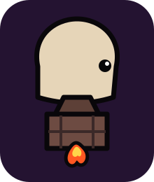
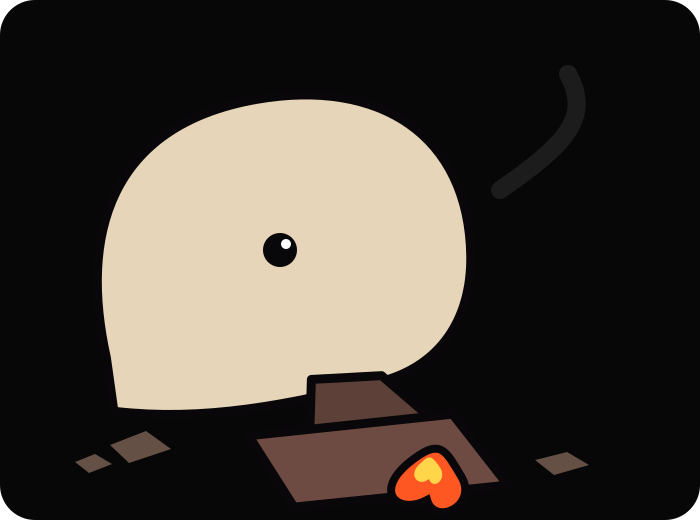

0

بالن غروب
گپ ستون را کنترل کن و از آن عبور کن.
بازی متوقف شد

بازی تمام شد
امتیاز 0
راهنما
روی خود ستون ضربه بزن تا گپ کمی بالا برود. وقتی گپ به بالاترین حد رسید، ضربه بعدی جهت را عوض میکند و گپ پایین میآید. میتوانی خود ستون را با انگشت بالا یا پایین بکشی. بالن خودش سقوط نمیکند؛ فقط باید گپ را جلوی بالن نگه داری.